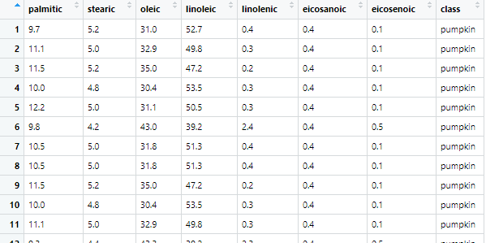

Modelar datos
Introducción
Modelar consiste en la aplicación de herramientas matemáticas para caracterizar un conjunto de datos y encontrar relaciones entre ellos, con las que somos capaces de:
- Predecir futuros resultados
- Encontrar patrones y diferencias entre variables
- Mejorar la visualización de los resultados
A la hora de modelar, existen dos partes a seguir:
-
Primero, Debemos encontrar un patrón dentro de los datos, que puede ser desde una relación lineal simple (y = a·x + b) hasta una curva cuadrática (y = a·x ^ b), siendo x e y las variables conocidas y "a" y "b" los parámetros que podemos modificar para encontrar la relación.
-
Tras esto, conocienco el patron, debemos encotrar el modelo que se ajusta a los datos (es decir, definir "a" y "b")
Nota
Hay que tener en cuenta que ningún modelo elegido es perfecto, simplemente es el que mejor se ajusta a los datos. Hay veces en el que el mejor modelo simplemente es malo y no tiene por que cumplirse en todos los casos.
En esta parte del tutorial, además de tidyverse, emplearemos el paquete modelr, incluido en R base y que nos dará algunar herramientas para comenzar a modelar. Además, vamos a usar modeldata, que incluye una serie de conjuntos de datos preparados para aprender a modelar. Instalamos los paquetes y los cargamos:
1 | |
1 2 3 | |
Modelado básico
Para este apartado, vamos a usar el set de datos contenido en modeldata llamado "oils", que muestra las diferentes concentraciones de ácidos grasos en diferentes especies vegetales.
1 2 | |

Para comenzar a modelar nos puede venir bien representar gráficamente los datos con los que queremos trabajar. Por ejemplo, imaginemos que necesitamos estudiar las concentraciones de ácido oléico con respecto a las de linoleico. Vamos a representar estas variables en un diagrama de dispersión:
1 2 | |
Vemos que hay una clara tendencia lineal entre las variables (y = a·x + b). Para elegir la linea que mejor se ajusta podemos generar multitud de ellas y elegirla al verla en la gráfica. Para ello, debemos generar rectas "aleatorias", para lo cual podemos usar la funcion runif para generar pendientes y puntos de corte con el eje y (es decir, "a" y "b" respectivamente)
1 | |
1 2 3 4 | |
1 | |
1 2 3 | |
Obtenemos algo parecido a esto:
Vemos que la mayoría de lineas generadas están lejos de ajustarse a los datos. Para seleccionar las buenas es necesario calcular la distancia vertical entre los puntos y las lineas. Para ello, sin embargo, es necesario crear funciones.